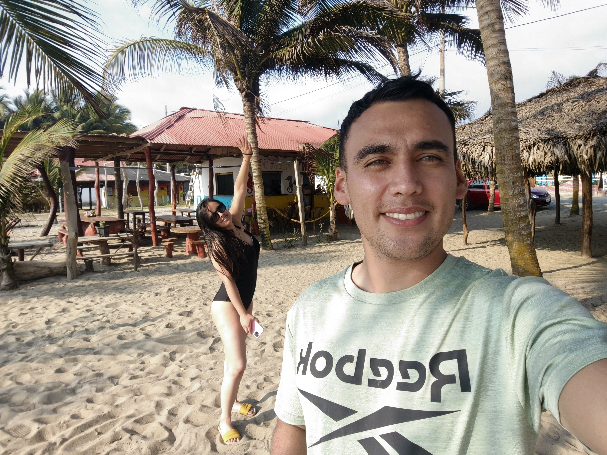
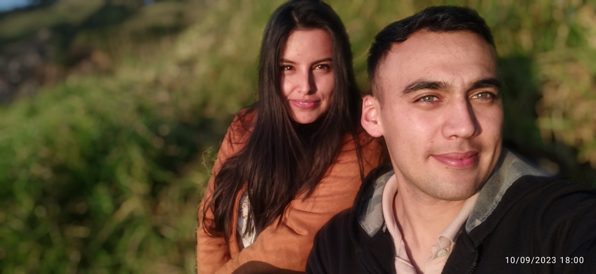
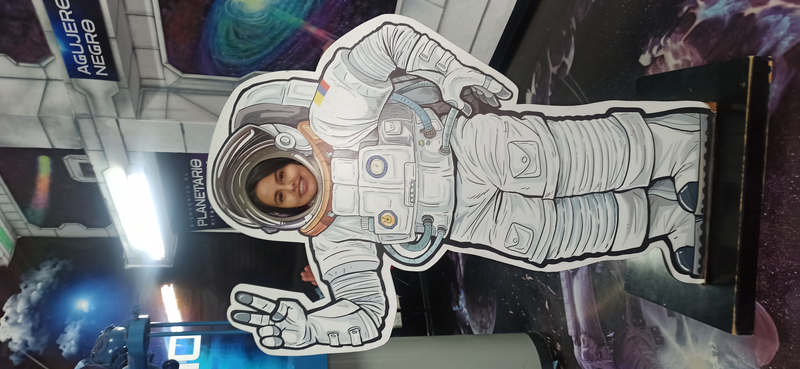
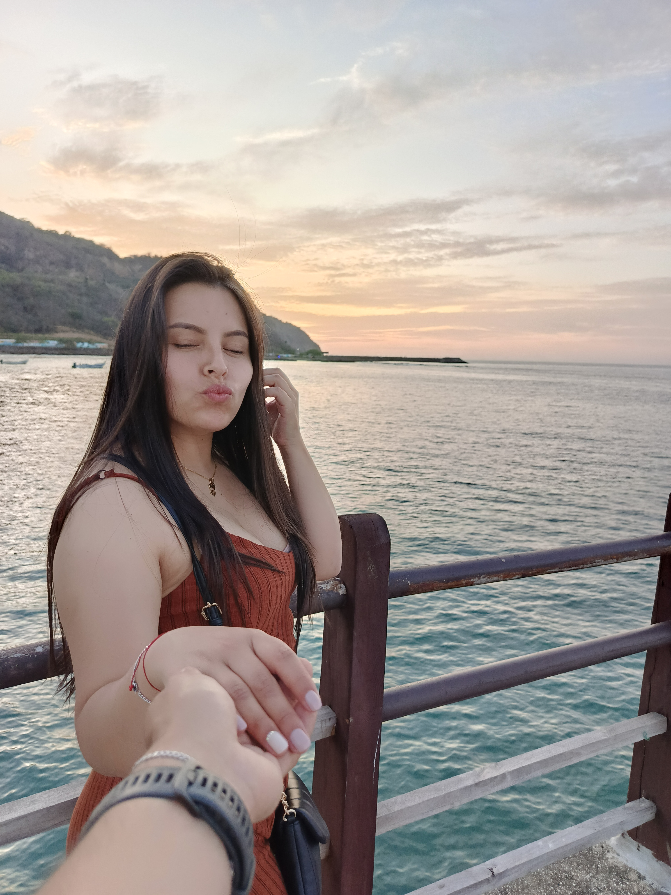
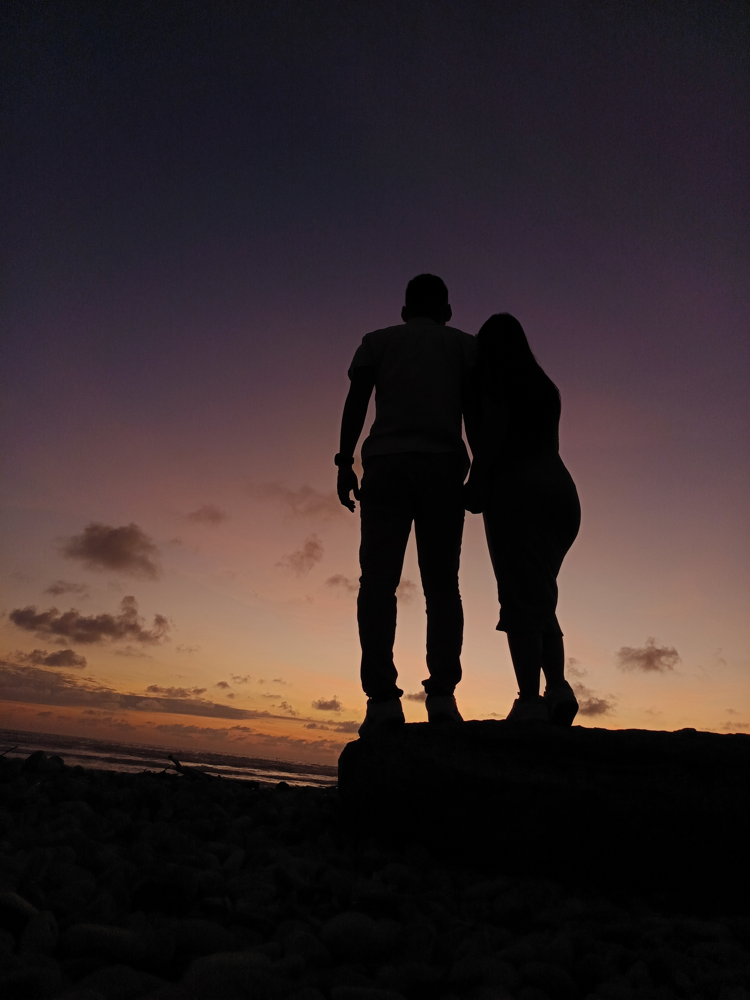
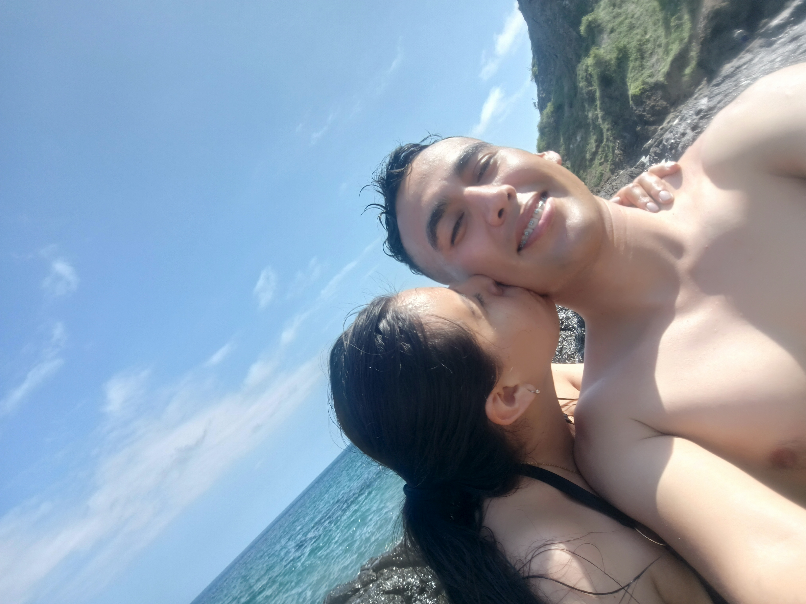

He preparado algo especial para usted...
Algunos recuerdos que guardo con mucho amor.






Mi cielo, quiero que sepa que cada momento que hemos compartido ocupa un lugar especial en mi corazón.
Esta página es una pequeña forma de guardar nuestros recuerdos y todo aquello que hemos vivido juntos.
Con todo mi amor ❤️
A veces pienso que nuestra historia comenzó mucho antes de que nosotros mismos pudiéramos imaginarlo. Cuando éramos niños, cuando simplemente jugábamos, reíamos y compartíamos momentos sin saber que, muchos años después, nuestras vidas volverían a encontrarse. Éramos dos niños viviendo nuestra infancia, sin saber que el destino ya estaba escribiendo, de alguna manera, las primeras páginas de nuestra historia. Pasaron los años, crecimos, tomamos caminos diferentes y nuestras vidas siguieron su rumbo. Cada uno vivió sus propias experiencias, conoció personas, tuvo sueños, dificultades y aprendizajes. Y, sin que lo planeáramos, nuestros caminos volvieron a cruzarse. Esta vez ya no éramos aquellos niños que jugaban juntos; éramos dos personas que habían cambiado, que tenían nuevas ilusiones y que estaban listas para descubrir algo diferente.
Desde entonces hemos vivido de todo. Hemos conocido momentos hermosos, hemos reído, hemos compartido sueños y hemos creado recuerdos que siempre llevaré conmigo. Pero también hemos tenido momentos difíciles, desacuerdos, tristezas y etapas en las que quizás no supimos entendernos como hubiéramos querido. Y creo que justamente eso también forma parte de nuestra historia, porque amar no significa que todo sea perfecto; significa que, a pesar de las dificultades, existe algo que nos impulsa a querer seguir construyendo.
Hoy miro hacia atrás y me doy cuenta de que no solamente hemos compartido tiempo, sino que hemos construido una historia. Una historia que comenzó cuando éramos niños y que, después de tantos años, nos volvió a poner frente a frente. Tenemos todavía tantos sueños por cumplir. Lugares que queremos conocer, proyectos que queremos realizar, momentos que todavía no hemos vivido y fotografías que todavía no hemos tomado. Hay amaneceres que aún no hemos visto juntos, viajes que todavía no hemos hecho, metas que todavía nos esperan y muchas páginas que todavía podemos escribir.
No sé qué nos depare exactamente el futuro, pero sí sé que cuando pienso en todo lo que hemos vivido, me cuesta creer que después de tantos años nuestros caminos hayan vuelto a encontrarse. De todos los caminos que pudimos tomar, de todas las personas que pudimos conocer, la vida nos volvió a poner juntos. Y eso para mí siempre tendrá un significado especial. Quiero que recuerdes que antes de ser mi esposa, fuiste aquella niña con la que alguna vez compartí juegos y momentos sin saber lo importante que llegarías a ser en mi vida. Y quizás lo más bonito de nuestra historia es que aquella amistad de niños, después de tantos años y tantas vueltas de la vida, terminó convirtiéndose en este amor que hoy conocemos. No quiero que nuestra historia se quede solamente en lo que ya hemos vivido. Quiero que podamos seguir escribiéndola. Con paciencia, con comprensión, aprendiendo de nuestros errores y disfrutando de nuestros aciertos. Quiero que algún día podamos mirar atrás y decir: “Mira todo lo que vivimos, todo lo que superamos y todos los sueños que conseguimos juntos.” Porque nuestra historia todavía no termina. Todavía nos quedan muchos capítulos, muchos sueños y muchos momentos por vivir. Y si algo deseo de corazón, es que podamos seguir encontrándonos una y otra vez, como aquella vez cuando éramos niños, como aquella vez que la vida volvió a cruzar nuestros caminos, y como espero que suceda muchas veces más. Le amo, mi amor. ❤️
Algunas palabras que quiero dedicarle ❤️
Es una de las personas más importantes de mi vida. ❤️
Gracias por todos los momentos que hemos compartido juntos.
Sus ojos son el universo en el cual me pierdo cuando la miro.
Le elegiría una y otra vez por mil años mas mi Lorita. ❤️
Hay algo que quiero guardar para nosotros...
Si algún día volvemos a mirar esta página, quiero que recordemos todos los momentos que nos hicieron llegar hasta aquí, todo aquello que nos ha mantenido unidos en la felicidad y la adversidad. Pues nunca ha de existir un amor perfecto pero si un amor puro y real.
Que nunca olvidemos las risas, los abrazos, los viajes, las conversaciones y todos esos pequeños momentos que formaron nuestra historia.
Y si estamos leyendo esto juntos, significa que seguimos escribiendo nuestra historia. ❤️